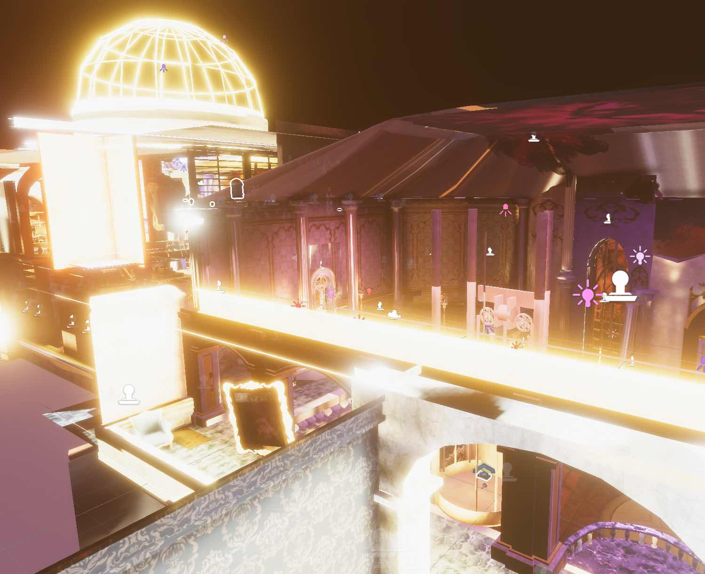

Painted World: Neo-Versailles
Painted World: Neo-Versailles was a collaboration between the ArtCenter College of Art and Design in California and Rochester Institute of Technology. The project was written in Unity, and used Perforce, Confluence, and Jira for version control and project management. As an RIT student on the project, my focus was on the technical needs of the project as a programmer. The project spanned the entire academic 2022 - 2023 year, starting for RIT in August and ending in May.The project was on display at two different RIT events: the Student Games Showcase and Imagine RIT.
Inventory
The key part I worked on for the Fall semester was the inventory. It needed to be easily modifiable by the designers since the size and objects could change at any time during the development of the game. It also needed to be efficient enough that it didn't contribute to significant lag when accessed and the items within needed to be identifiable.The basics of the inventory work as follows:
Inventory.cs
Handles the actual inventory array, as well as any methods to add objects to it. The inventory array is modifiable before the game starts up, but from that point on, the size couldn't be changed. If an item is used or removed, the inventory shifts the index of each item past that point down by one. When adding, the inventory has different logic depending upon the item type, meaning it can handle both stackable and non-stackable items.
InventoryItem.cs
Parent class and default for every inventory item. Any other specialty item types are based upon this class. The key parts of the functionality on the backend are the item type and the ID. The type is just a simple way of knowing what item we're looking it, like ammo or a potion, especially when that item needs to stack. The ID number was essential for both storing the items, debugging, and saving/loading the inventory. Other than these two key pieces, the item handles removing itself from the world and adding itself back into the world (although this was never finalized as the game never used it).
StackableItem.cs
This was the most essential type of item for the game. From the beginning essentially every planned item needed to be stackable. Currently, it uses a list and a maximum stack value to hold the stacked items. This functions and is easy to use but it would be better if it were an array, similar to how to actual inventory functions.
KeyItem.cs This script was intended to contain any special functionality of key items, but the game never needed any unqiue functionality in the final version, so it just sits as an empty dummy class.
An updated version of the inventory scripts for this project is being used by the two 2023-2024 RIT ArtCenter collaborations.
Player Variables
I worked on our central script for player variables. This exists to prevent these from being changed or duplicated elsewhere in the code. Anything essential to the player that needed to be accessed by different scripts was housed here, meaning everything was just a reference back to this key file.Environmental Scripts
Neo-Versailles has a number of scripts affecting environmental assets in order for the game to have its look and feel. Most of what I did here was create scripts allowing the designers to move and rotate objects while the scenes played as well as create objects that the player could affect with their abilities. This also included anything that reset the player to their last saved position, preventing them from getting out of bounds, which tended to happen during testing.Lighting
During the second semester of the development of Painted World: Neo-Versailles, I spent most of my time working on performance improvements for the game. We were running into issues where the frame rate would vary greatly between scenes, or the frames would be so low it looked like everything was smearing across the screen. As the visual development of the game was the focus of the spring, the game was slowly becoming unplayable.Some of our major issues were a lack of culling in scenes and given the size of these scenes and the polycount of our assets, it was straining most computers to run. This was simple to solve as Unity has tools to create culling volumes. These only required a little fixing when it came to doorways as the player would only see a blank space after the door opened.
Our biggest problem was lighting. A large part of the visuals created for Neo-Versailles relied heavily upon the lighting used in-engine to produce the required emotion for players. Due to inexperience with Unity as students, lights were created and left in real-time mode. This caused a drastic decrease in performance for the game.

The above example was our canary in the coal mine, so to speak. As the game progressed, we started to see lights flickering in-engine while the game was running. After investigating the problem, I found that there was an extreme number of real-time lights being used in that scene, totaling 231 in the final lit version.
Many of these lights were no longer providing any visuals but were still present and functioning during gameplay. As you can imagine, this scene ran incredibly slow, particularly given that it was the largest scene created for the game with very few large objects blocking the player's view. We needed this level to have a high enough frame rate to be effective, given it was a chase scene with the player running away from the ever-pursuing demon.

Another lighting issue we ran into was overlapping UVs. These overlaps cause parts of the map to be lit incorrectly, often to an eye-watering degree as seen above. Some of these could be solved by recreating their lightmap UVs, removing the overlap. For others, this option didn't work, leading to some of the truly strange lighting seen in later levels.
Feel free to reach out via email if you would like to play the final version of the game or look at the code!